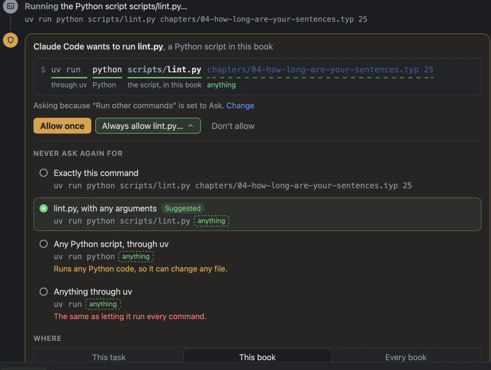
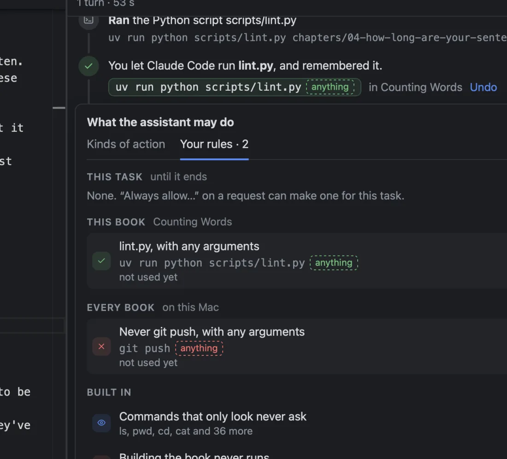

What it may do without asking
Three settings cover most people. The shield on the message box shows which one you’re on, and opens the same choices as Settings ▸ Permissions.
- Ask first
- To start with. It asks before every change, so you see each edit first.
- Edit freely
- Edits, creates and renames the book’s files, and changes Foreword’s settings, without asking. It still asks before deleting anything, going outside the book, running a program, or using the web.
- Read-only
- Reads and answers. Never changes anything.
For finer control, each kind of action can be set to Ask, Allow or Never on its own: editing and creating files, renaming or moving them, deleting them, files outside this book, running programs, using the web, and changing Foreword’s settings. A change takes effect at once, in the conversation you’re in.
Whatever you choose, it can always read the book, and it can always look around (list a folder, search for a word) without asking.
Before a program runs
Programs are where an assistant can do the most, so a request to run one is explained before you answer. A card says what it is in words: “Claude Code wants to run lint.py, a Python script in this book.” Under it, each part of the command is labelled:
$ uv run python src/scripts/lint.py 17
through uv Python the script, in this book argumentTags say what it would reach beyond the book: Uses the internet: github.com, Writes outside the book: ~/out.txt, Deletes files. Something run as an administrator says so. A line says why you’re being asked (“Asking because ‘Run other commands’ is set to Ask”), with a link to change that. Then: Allow once, Always allow lint.py…, or Don’t allow.
Sometimes the assistant writes a few lines of code and wants to run them. The card shows the code. If it would change your chapters, Ask it to edit instead turns it down and asks the assistant to make the change as an ordinary edit, so you see each change as it goes in.
“Always” is a rule you can see
Always allow… offers rules from narrow to broad. For the lint.py request above:
- Exactly this command.
- lint.py, with any arguments. Suggested: the narrowest rule that will still save you being asked next time, and it carries no warning.
- Any Python script, through uv. “Runs any Python code, so it can change any file.”
- Anything through uv. “The same as letting it run every command.”
Then choose how far it reaches: this task (forgotten when the task ends), this book (until you remove it), or every book on this Mac. The confirmation says it in full: “Claude Code won’t ask again for lint.py, with any arguments, in Counting Words.” A rule for one book is kept in the book’s folder, so it goes wherever the book goes.
Later, anything that ran because of a rule is marked by your rule. Click it to see which rule, when you made it, and how often it’s been used, with Remove rule. All your rules are listed under Your rules in the permissions menu, each with an × to remove it.

git push.A rule covers that one program and nothing tacked on to it. If the assistant strings something you’ve allowed together with something you haven’t, the second part still asks. A “never” always wins.
One set of rules, whichever assistant
Claude Code and Codex have permission settings of their own, which Foreword can’t show you or undo. So when you say “always”, Foreword keeps the rule itself, and the assistant only ever hears “yes, this once”. Claude Code is made to ask about everything, even if your own Claude Code settings would have let it go ahead. Switch assistants and your rules still apply.
What the assistant can’t change
- Its own permissions. Asked to give itself more, it can only point you to Settings.
- The files your rules are kept in. Any edit to them asks you, whatever else is allowed.
- In Ask, Discuss and Options, nothing changes your files, whatever your rules allow. A “never” holds in every mode.
What it doesn’t do
- A rule trusts the program it names. Allowing a script means trusting whatever that script does.
- Codex keeps some rules of its own, and acts on them without asking. Settings lists them so you can see them.
- A program that’s already running can’t be watched or stopped on its own yet.
- Gemini CLI and Antigravity go through the same checks, but haven’t yet been tested in a real signed-in conversation.